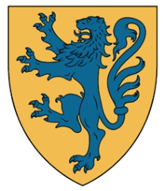

787591575050 Count Welf of Bavaria
Greve av Bavaria. Blev ca 78 år.

Född:
omkring 746 Bavaria, Tyskland.
[1]
Död:
824-09-03 Tyskland.
[1]
Barn med
787591575051 Countess Heilwig of Saxony (780? - 843)
Barn:
Judith of Bavaria (800? - 843)
Personhistoria
Årtal
Ålder
Händelse
746?
Födelse omkring 746 Bavaria, Tyskland
[1]
780?
Partnern
787591575051 Countess Heilwig of Saxony
föds omkring 780 Saxony, Tyskland
[1]
800?
Dottern
393795787525 Empress Judith of Bavaria
föds omkring 800 Alldorf, Eistadt, Bavaria, Tyskland
[2]
823
Barnbarnet
196897893762 Kejsare Charles II of the Franks
föds 823-06-13 Frankfurt am Main, Tyskland
[3]
824
Död 824-09-03 Tyskland
[1]
Källor
[1]
comrade28
[2]
Jack Morter
[3]
Wikipedia